ECT/UFRN
Nós humanos utilizamos os dois olhos para enxergar.
Por qual motivo?
Seres humanos e vários outros animais utilizam dois olhos para a obtenção da profundidade de objetos
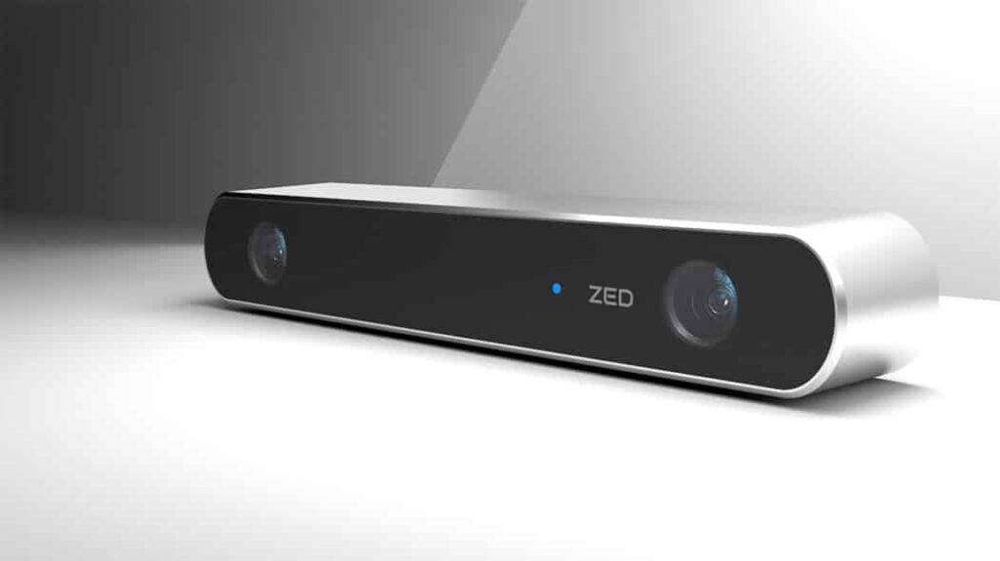
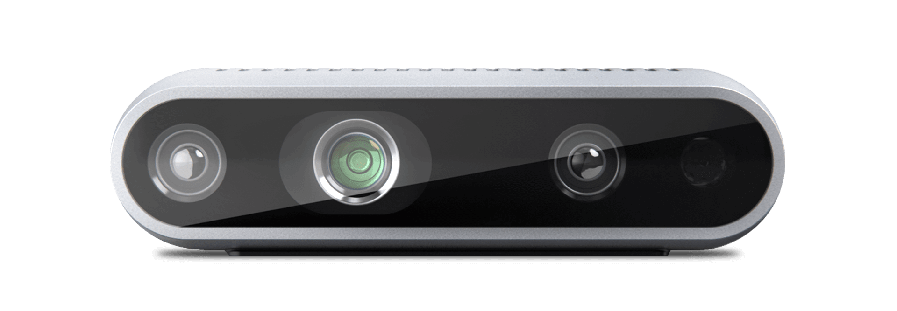
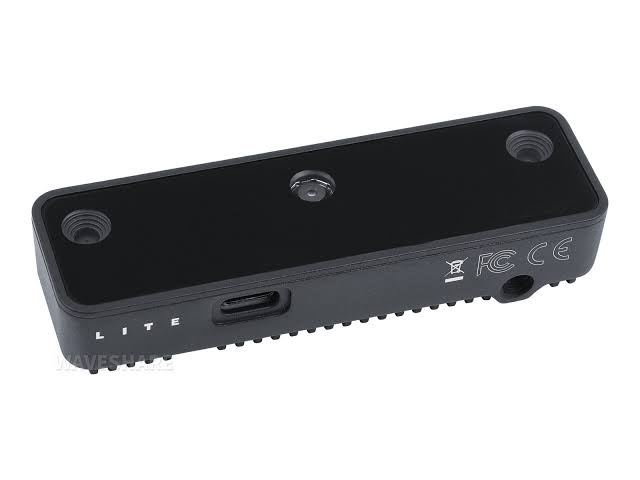
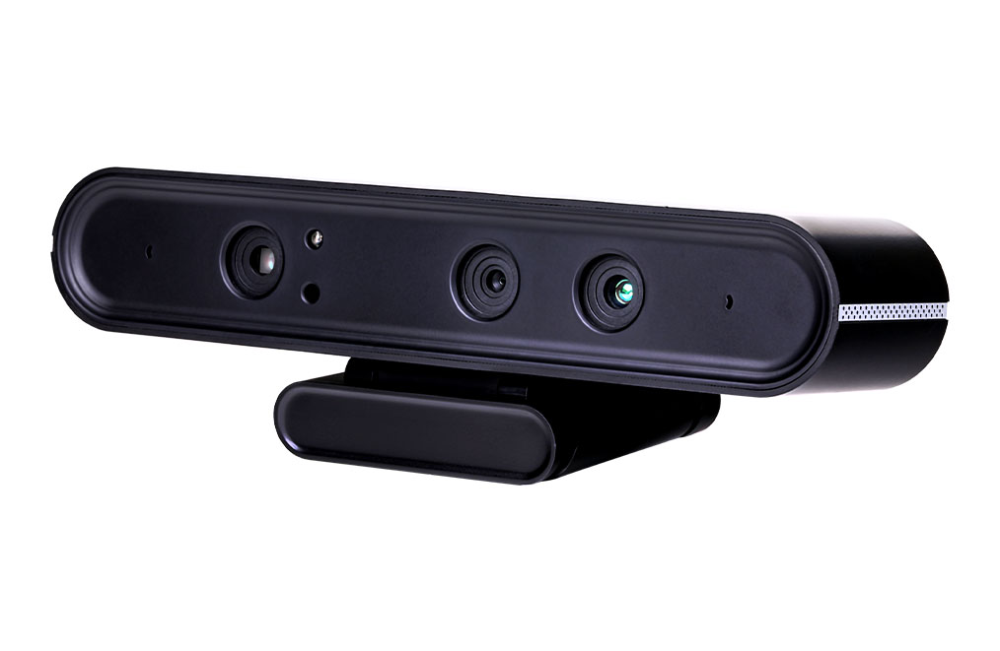
Em Visão Computacional:
… entretanto, com a pose relativa entre as câmeras sendo fixa:
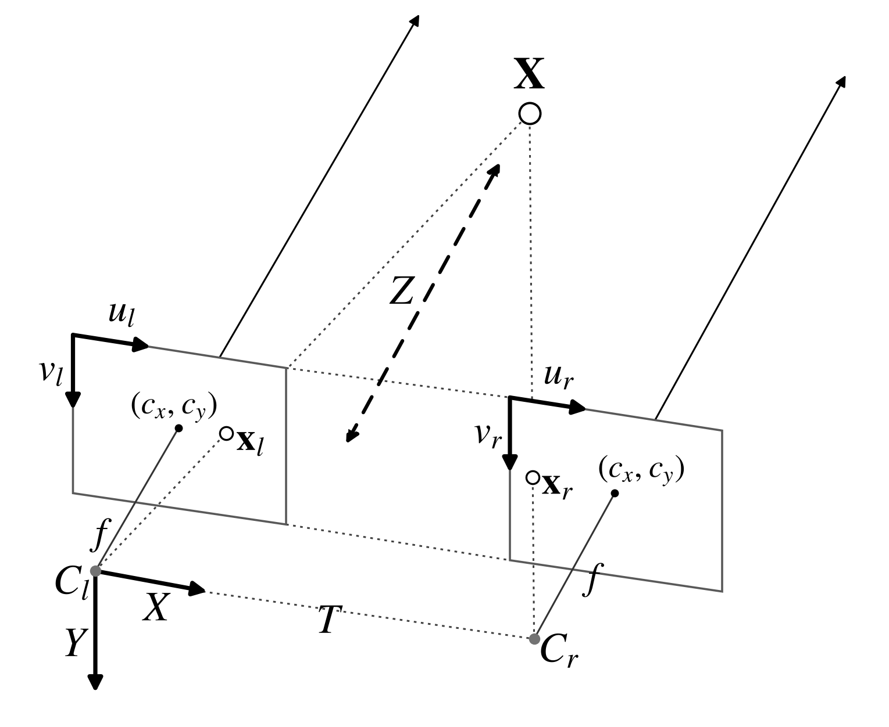
Ideia do processo:
Computacionalmente:
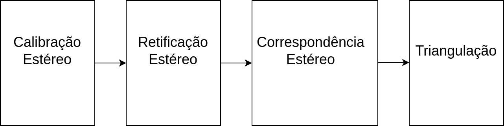
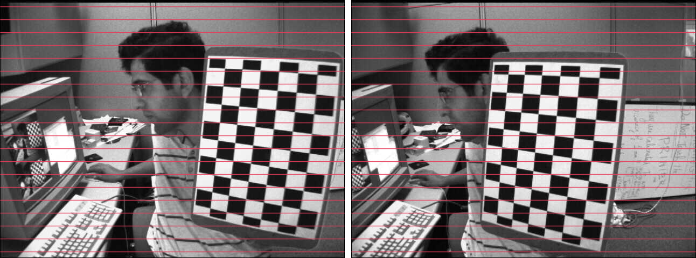
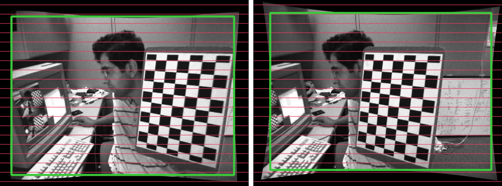
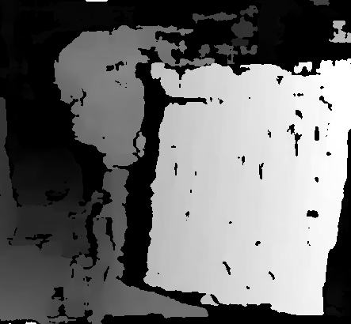
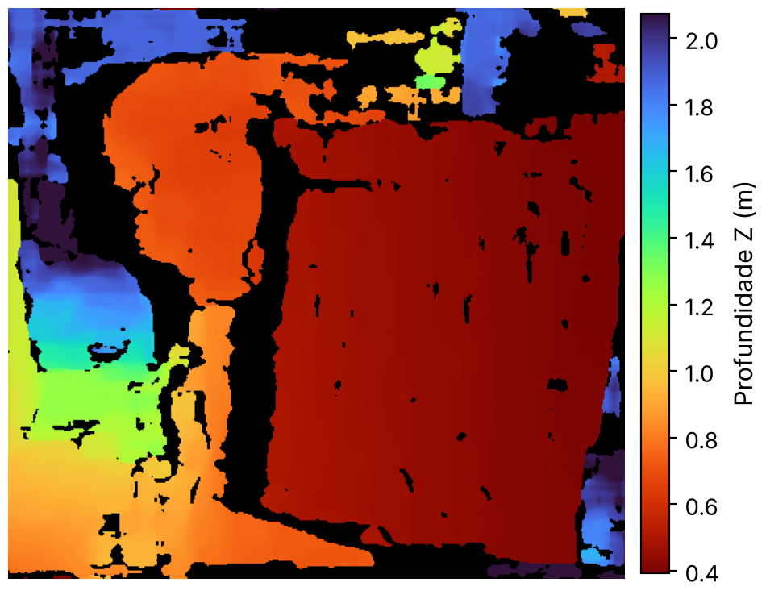
Para aplicações de robótica, o estéreo calibrado é mais confiável e possui melhor desempenho computacional.
Ideia do algoritmo – mesmos princípios da calibração monocular:
A OpenCV possui uma função bem flexível para calibração.
Ela permite computar os parâmetros:
Para a 3ª. opção, a quantidade de imagens com o padrão é maior, já que a quantidade de parâmetros a serem estimados também é.
stereoCalibrate: calibra um sistema de visão estéreo.
Parâmetros:
stereoCalibrate: calibra um sistema de visão estéreo.
Parâmetros:
stereoCalibrate: calibra um sistema de visão estéreo.
Parâmetros:
stereoCalibrate: calibra um sistema de visão estéreo.
Parâmetros:
Processo responsável por alinhar virtualmente as duas câmeras:
Isto permite que a correspondência estéreo seja realizada com menos custo computacional.
Configuração estéreo ideal:
a retificação é responsável pelo alinhamento virtual das câmeras.
l = left (câmera esquerda)
r = right (câmera direita)
Retificação:
Ideia do algoritmo:
Computar a transformação de warping a ser aplicada a cada imagem para as linhas epipolares ficarem coplanares e coincidirem.
Isto deve ser feito de forma a distribuir a deformação entre as duas imagens e maximizar a área comum.
Ideia do algoritmo:
stereoRectify: calcula novas matrizes de rotação R_l e R_r a serem aplicadas às poses da câmera esquerda e direita para retificação.
A função aceita diversas configurações, como o controle sobre o tamanho da imagem de saída.
Com a saída de stereoRectify, o seguinte processo é realizado:
Na OpenCV, este processo é computado com duas funções:
initUndistortRectifyMap: executada apenas uma vez porcâmera, após a calibração estéreo. Retorna as coordenadas de pixels que devem ser usadas para construir a imagem retificadaremap: executada para cada par estéreo, para interpolar o resultado da função anterior gerando a imagem retificadaProcesso responsável por:
O resultado da correspondência estéreo é chamado de cálculo de disparidade:
A profundidade Z de um ponto é inversamente proporcional à sua disparidade:
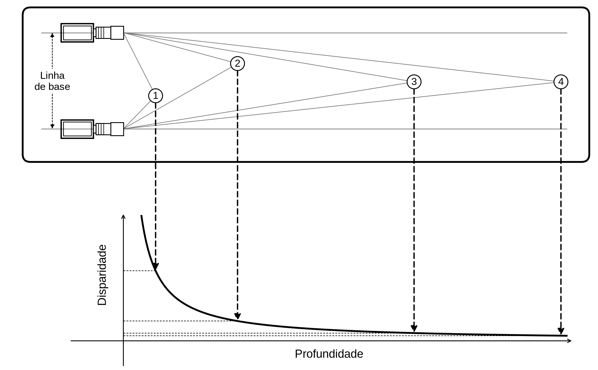
Dois possíveis algoritmos:
Para o algoritmo denso, a ideia é explorar imagens retificadas:
Cada disparidade corresponde a um plano de profundidade constante: quanto mais próximo da câmera, menor é a diferença de profundidade entre as disparidades.
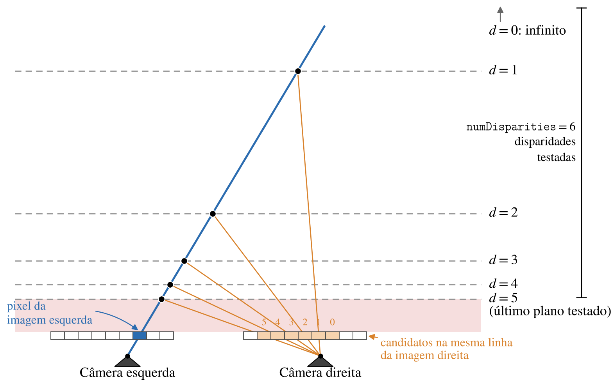
Parâmetros do algoritmo denso:
Parâmetros do algoritmo denso:
minDisparity: disparidade mínima (padrão é 0). Informa a disparidade mínima na busca, ou seja, o início da busca pela correspondêncianumDisparities: quantidade de disparidades. Junto com o parâmetro anterior, informa a quantidade de disparidades que um ponto pode ter como sendo minDisparity + numDisparities - 1Observações importantes:
numDisparities não melhora a resolução; ao invés disto, amplia o alcance em direção à câmera, a um custo maior de processamento e com uma faixa inválida maior na borda esquerda do mapa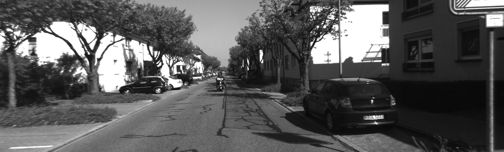
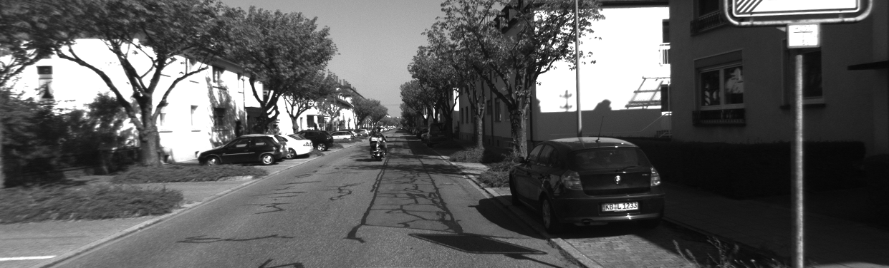
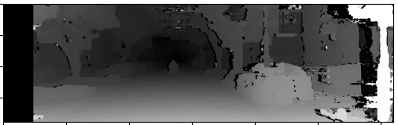
Quanto mais próximo da cor branca, mais próximo o objeto está da câmera.
Na OpenCV, estão presentes pelo menos 2 algoritmos para correspondência estéreo:
StereoBM: block matching simples \rightarrow baixo custo computacional mas com mapa resultante de precisão limitadaStereoSGBM: semi global block matching \rightarrow mapas de qualidade superior a um maior custo computacionalStereoBM.create: cria um objeto do tipo block matching
Parâmetros:
minDisparity: disparidade mínima esperadanumDisparities: número de disparidades esperado (resolução do mapa). Precisa ser múltiplo de 16blockSize: tamanho do bloco. Precisa ser ímpar e maior do que 5StereoSGBM.create: cria um objeto do tipo semi global block matching
Novos parâmetros em relação ao StereoBM:
P1: penalidade da disparidade por mudança de mais ou menos 1 entre pixels vizinhos. Quanto maior, mais suave será a disparidadeP2: penalidade da disparidade por mudança maior que 1 entre pixels vizinhos. Quanto maior, mais suave será a disparidademode: utilizar cv2.STEREO_SGBM_MODE_SGBM_3WAYEm comum a ambos os algoritmos:
compute: computa o mapa de disparidade para um par de imagensO mapa de disparidade é geralmente armazenado com o tipo CV_16S:
O mapa de disparidade é geralmente armazenado com o tipo CV_16S:
(minDisparity - 1) x 16Processo responsável por:
Premissas:
Premissas:
Modelo geométrico - triangulação:
Obtenção da profundidade de um ponto (coordenada Z) através da imagem de um ponto em duas câmeras.
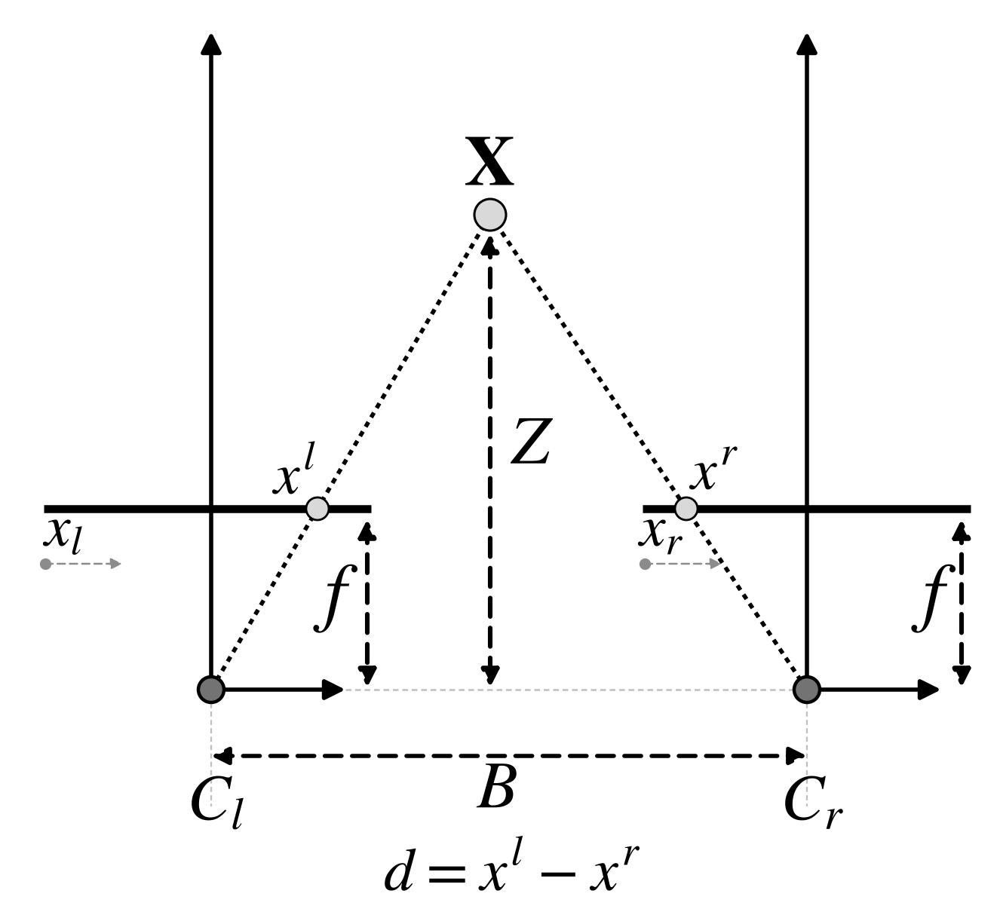
Por semelhança de triângulos:
\frac{B}{Z} = \frac{B - (x^r - x^l)}{Z - f}
Z = \frac{fB}{x^l - x^r}
Z = \frac{fB}{d}
Observe a importância dos parâmetros da correspondência estéreo minDisparity e numDisparities:
Considere que o par estéreo possui B = 0,1m e f = 440 px. Para minDisparity = 0 e numDisparities = 160, a profundidade mínima do sistema será:
Z_{min} = \frac{fB}{d} = \frac{440 \times 0,1}{160} = 27,5cm
Ainda com os mesmos parâmetros, observe a diferença das profundidades Z_1 e Z_2, correspondentes aos planos inteiros obtidos com disparidades d=1 e d=2 respectivamente:
Z_{1} = \frac{fB}{d} = \frac{440 \times 0,1}{1} = 44m
Z_{2} = \frac{fB}{d} = \frac{440 \times 0,1}{2} = 22m
Ou seja, 1 pixel de disparidade equivale a 22m de mudança de profundidade para as maiores profundidades mensuráveis.
Após a coordenada Z_i de cada ponto i ser obtida, é possível obter uma nuvem de pontos 3D referenciado no sistema de coordenadas da câmera esquerda.
Para isto, aplica-se retroprojeção com o Z_i conhecido:
x_i = \frac{f_x X_i}{Z_i} + c_x \rightarrow X_i = \frac{Z_i(x_i - c_x)}{f_x}
y_i = \frac{f_y Y_i}{Z_i} + c_y \rightarrow Y_i = \frac{Z_i(y_i - c_y)}{f_y}
reprojectImageTo3D: recebe a matriz Q e mapa de disparidade computados pela stereoRectify e devolve a nuvem de pontos 3D da cena. A matriz Q realiza a retroprojeção dos pontos.
Nesta aula – Visão Estéreo:
Visão Robótica - PPGEMECA/UFRN